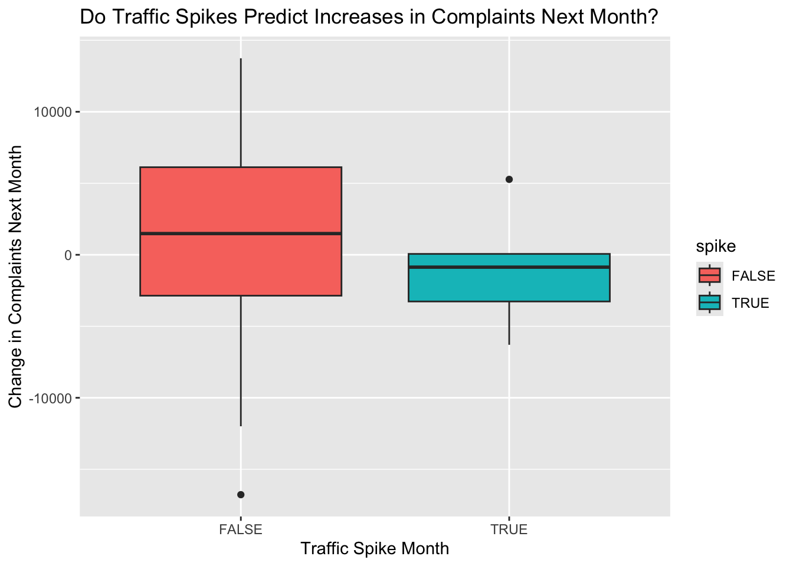

Understanding whether traffic patterns influence resident reporting behavior is essential for interpreting urban mobility and service-demand dynamics. This analysis examines how stable the relationship is between traffic volume and 311 complaint frequency across New York City boroughs throughout 2024. By analyzing monthly traffic counts alongside total complaint volumes, we assess whether fluctuations in mobility meaningfully align with changes in public reporting activity.
To capture the temporal nature of this relationship, we compute rolling correlations to observe how traffic–complaint alignment evolves month by month and determine whether any consistent patterns emerge. Additionally, we evaluate short-term traffic anomalies—sudden increases in volume—to test whether these spikes serve as leading indicators of temporary rises in complaints.
Together, these methods allow us to determine whether the traffic–complaint relationship is stable, episodic, or largely unrelated, and whether short-term shifts in congestion meaningfully influence how frequently residents report issues to the city.
Data Aquisition
Download 311 Data
To obtain the full 2024 311 dataset, we used an automated script that downloads the data directly from the NYC Open Data API in manageable batches of 50,000 rows. Each batch is saved as a separate CSV file, and the script automatically resumes from the next batch if interrupted. Once all batches are retrieved, they are combined into one complete dataset for cleaning and analysis. This method ensures we can reliably access the full year of 311 complaints despite API size limits.
Show Code
library(httr2)library(readr)library(dplyr)library(stringr)base_url <-"https://data.cityofnewyork.us/resource/erm2-nwe9.csv"batch_dir <-"data/311_batch"# folder for per-batch filesbatch_pattern <-"^nyc_311_2024_batch_(\\d+)\\.csv$"cols <-c("unique_key","created_date","agency","complaint_type","descriptor","location_type","incident_zip","incident_address","street_name","cross_street_1","cross_street_2","intersection_street_1","intersection_street_2","address_type","city","landmark","borough","x_coordinate_state_plane","y_coordinate_state_plane","latitude","longitude","location")where_2024 <-"created_date between '2024-01-01T00:00:00' and '2024-12-31T23:59:59'"batch_size <-50000# Force consistent column types (all character to avoid bind_rows issues)col_spec <-cols(.default =col_character())#-------------------------------------------------------------------# Helper: figure out where to resume (batch index + offset)#-------------------------------------------------------------------get_resume_state <-function() {if (!dir.exists(batch_dir)) {dir.create(batch_dir, recursive =TRUE)return(list(next_batch_id =1L, offset =0L)) } existing_files <-list.files(batch_dir, pattern = batch_pattern, full.names =FALSE)if (length(existing_files) ==0) {return(list(next_batch_id =1L, offset =0L)) }# Extract batch numbers from filenames batch_nums <-str_match(existing_files, batch_pattern)[, 2] batch_nums <-as.integer(batch_nums[!is.na(batch_nums)]) max_batch <-max(batch_nums)# Each batch uses limit = batch_size and no overlap,# so starting offset for the *next* batch is: offset <- (max_batch) * batch_sizelist(next_batch_id = max_batch +1L, offset = offset)}#-------------------------------------------------------------------# Download in batches with httr2, writing each batch to disk#-------------------------------------------------------------------download_311_2024_batches <-function() { resume <-get_resume_state() batch_id <- resume$next_batch_id offset <- resume$offsetmessage(sprintf("Starting (or resuming) at batch %d, offset %d", batch_id, offset))repeat {message(sprintf("Requesting batch %d (offset = %d)...", batch_id, offset)) req <-request(base_url) |>req_url_query("$select"=paste(cols, collapse =","),"$where"= where_2024,"$limit"= batch_size,"$offset"= offset ) resp <- req |>req_perform() raw_csv <- resp |>resp_body_raw() chunk <-read_csv(raw_csv, col_types = col_spec, show_col_types =FALSE)if (nrow(chunk) ==0) {message("No more rows returned; finished downloading.")break }# Write this batch immediately to disk out_path <-file.path(batch_dir, sprintf("nyc_311_2024_batch_%04d.csv", batch_id))write_csv(chunk, out_path)message(sprintf(" Retrieved %d rows and wrote '%s'.", nrow(chunk), out_path))if (nrow(chunk) < batch_size) {message("Last (partial) batch received; stopping.")break } offset <- offset + batch_size batch_id <- batch_id +1LSys.sleep(0.25) # be polite to the API }}
Show Code
# write and read final file final_file <-"data/nyc_311_2024_full.csv"load_all_311_2024_batches <-function(write_final =FALSE) {if (!dir.exists(batch_dir)) {stop("Batch directory does not exist: ", batch_dir) } files <-list.files(batch_dir, pattern = batch_pattern, full.names =TRUE)if (length(files) ==0) {stop("No batch files found in: ", batch_dir) }message(sprintf("Loading %d batch files...", length(files))) dfs <-lapply(files, function(f) {read_csv(f, col_types = col_spec, show_col_types =FALSE) }) df <-bind_rows(dfs)if (write_final) {dir.create(dirname(final_file), recursive =TRUE, showWarnings =FALSE)write_csv(df, final_file)message(sprintf("Wrote combined data to '%s'.", final_file)) } df}#-------------------------------------------------------------------# use final combined file if present; otherwise build it#-------------------------------------------------------------------if (file.exists(final_file)) {message(sprintf("Final file '%s' exists. Loading for analysis...", final_file)) data_311_2024 <-read_csv(final_file, col_types = col_spec, show_col_types =FALSE)} else {message(sprintf("Final file '%s' not found. Ensuring batches are downloaded...", final_file))# This will resume from whatever batches we havedownload_311_2024_batches()# Load all batches, write final file, and return combined df data_311_2024 <-load_all_311_2024_batches(write_final =TRUE)}# Now ready for analysisstr(data_311_2024)
We used the same batch-based approach to download the 2024 Automated Traffic Volume Counts from the NYC Open Data API. Because the dataset is too large for a single request, the script retrieved the traffic records in 50,000-row batches, saving each batch locally. The script also detects previously downloaded batches and automatically resumes from where it left off. After all available 2024 traffic data is collected, the batches are combined into one unified dataset for monthly aggregation and analysis.
Show Code
# traffic data library(httr2)library(readr)library(dplyr)library(stringr)#-------------------------------------------------------------------# Config for Automated Traffic Volume Counts#-------------------------------------------------------------------base_url_traffic <-"https://data.cityofnewyork.us/resource/7ym2-wayt.csv"batch_dir_traffic <-"data/traffic_batch"# folder for per-batch filesbatch_pattern_traffic <-"^nyc_traffic_counts_batch_(\\d+)\\.csv$"final_file_traffic <-"data/nyc_traffic_automated_counts_full.csv"batch_size_traffic <-50000# Force consistent column types to avoid bind_rows() issues across batchescol_spec_traffic <-cols(.default =col_character())#-------------------------------------------------------------------# Helper: figure out where to resume (batch index + offset)#-------------------------------------------------------------------get_resume_state_traffic <-function() {if (!dir.exists(batch_dir_traffic)) {dir.create(batch_dir_traffic, recursive =TRUE)return(list(next_batch_id =1L, offset =0L)) } existing_files <-list.files( batch_dir_traffic,pattern = batch_pattern_traffic,full.names =FALSE )if (length(existing_files) ==0) {return(list(next_batch_id =1L, offset =0L)) }# Extract batch numbers from filenames batch_nums <-str_match(existing_files, batch_pattern_traffic)[, 2] batch_nums <-as.integer(batch_nums[!is.na(batch_nums)]) max_batch <-max(batch_nums)# Each batch uses limit = batch_size_traffic and no overlap,# so starting offset for the *next* batch is: offset <- (max_batch) * batch_size_trafficlist(next_batch_id = max_batch +1L, offset = offset)}#-------------------------------------------------------------------# Download in batches with httr2, writing each batch to disk#-------------------------------------------------------------------download_traffic_batches <-function() { resume <-get_resume_state_traffic() batch_id <- resume$next_batch_id offset <- resume$offsetmessage(sprintf("Starting (or resuming) traffic download at batch %d, offset %d", batch_id, offset ))repeat {message(sprintf("Traffic: requesting batch %d (offset = %d)...", batch_id, offset))# get datareq <-request(base_url_traffic) |>req_url_query("$where"="yr = 2024","$order"="yr, m, d, hh, mm","$limit"= batch_size_traffic,"$offset"= offset ) resp <- req |>req_perform() raw_csv <- resp |>resp_body_raw() chunk <-read_csv(raw_csv, col_types = col_spec_traffic, show_col_types =FALSE)if (nrow(chunk) ==0) {message("No more rows returned; finished traffic download.")break }# Write this batch immediately to disk out_path <-file.path( batch_dir_traffic,sprintf("nyc_traffic_counts_batch_%04d.csv", batch_id) )write_csv(chunk, out_path)message(sprintf(" Traffic: retrieved %d rows and wrote '%s'.", nrow(chunk), out_path))if (nrow(chunk) < batch_size_traffic) {message("Traffic: last (partial) batch received; stopping.")break } offset <- offset + batch_size_traffic batch_id <- batch_id +1LSys.sleep(0.25) # be polite to the API }}#-------------------------------------------------------------------# Helper: load and combine all traffic batches; optionally write final file#-------------------------------------------------------------------load_all_traffic_batches <-function(write_final =FALSE) {if (!dir.exists(batch_dir_traffic)) {stop("Traffic batch directory does not exist: ", batch_dir_traffic) } files <-list.files( batch_dir_traffic,pattern = batch_pattern_traffic,full.names =TRUE )if (length(files) ==0) {stop("No traffic batch files found in: ", batch_dir_traffic) }message(sprintf("Loading %d traffic batch files...", length(files))) dfs <-lapply(files, function(f) {read_csv(f, col_types = col_spec_traffic, show_col_types =FALSE) }) df <-bind_rows(dfs)if (write_final) {dir.create(dirname(final_file_traffic), recursive =TRUE, showWarnings =FALSE)write_csv(df, final_file_traffic)message(sprintf("Wrote combined traffic data to '%s'.", final_file_traffic)) } df}#-------------------------------------------------------------------# Main: use final traffic file if present; otherwise build it#-------------------------------------------------------------------if (file.exists(final_file_traffic)) {message(sprintf("Final traffic file '%s' exists. Loading for analysis...", final_file_traffic )) traffic_counts <-read_csv( final_file_traffic,col_types = col_spec_traffic,show_col_types =FALSE )} else {message(sprintf("Final traffic file '%s' not found. Ensuring batches are downloaded...", final_file_traffic ))# This will resume from whatever batches you already havedownload_traffic_batches()# Load all batches, write final file, and return combined df traffic_counts <-load_all_traffic_batches(write_final =TRUE)}# Now ready for analysisstr(traffic_counts)
We used two datasets—311 Service Requests and Automated Traffic Volume Counts—to examine how traffic activity aligns with resident complaint behavior. After downloading and cleaning both sources, we aggregated each dataset to monthly borough level as below.
Monthly traffic per borough
We summed all traffic volume records within each borough for every month of 2024. This produced a month-by-month view of mobility patterns citywide.
Show Code
library(dplyr)library(lubridate)traffic_monthly_boro <- traffic_counts %>%mutate(yr =as.integer(yr),m =as.integer(m),vol =as.numeric(vol),# Use a real Date for the month key (first day of month)month =make_date(year = yr, month = m, day =1L) ) %>%group_by(boro, month) %>%summarise(total_traffic =sum(vol, na.rm =TRUE),.groups ="drop" )traffic_monthly_boro
These two datasets were then merged into a single table, enabling direct comparison between traffic volume, complaint frequency, and their changes over time.
This step measures how the relationship between traffic volume and 311 complaints changes over time within each borough. Using a 3-month rolling window, the code calculates the correlation between traffic and complaints for the current month and the two months before it.
slide2_dbl() applies this window across each borough’s timeline, returning a month-by-month correlation value. If a window has too few data points, it returns NA to avoid errors.
Show Code
library(slider)boro_month_roll <- combined_boro_month %>%arrange(boro, month) %>%group_by(boro) %>%mutate(roll_corr_3m =slide2_dbl( total_traffic, total_complaints,.f =~ {# handle small windows safelyif (sum(!is.na(.x) &!is.na(.y)) >=2) {cor(.x, .y, use ="complete.obs") } else {NA_real_ } },.before =2, # current month + previous 2 months.complete =TRUE ) )boro_month_roll
This code identifies traffic anomalies and tests whether they lead to higher complaints the following month.
Traffic anomalies: Traffic is standardized within each borough, and months more than 1.5 SD above normal are flagged as spikes.
Next-month complaints: We shift complaint counts forward to see if this month’s traffic predicts next month’s complaints.
Show Code
library(dplyr)df_anom <- combined_boro_month %>%group_by(boro) %>%mutate(traffic_z =as.numeric(scale(total_traffic)),spike =abs(traffic_z) >1.5# anomaly flag ) %>%ungroup()df_model <- df_anom %>%group_by(boro) %>%arrange(month) %>%mutate(complaints_next_month =lead(total_complaints, 1) ) %>%ungroup() %>%filter(!is.na(complaints_next_month)) # drop last month per boroughmodel <-lm( complaints_next_month ~ total_traffic + spike + boro,data = df_model)summary(model)
Call:
lm(formula = complaints_next_month ~ total_traffic + spike +
boro, data = df_model)
Residuals:
Min 1Q Median 3Q Max
-11371.8 -4535.9 260.2 3783.2 14071.6
Coefficients:
Estimate Std. Error t value Pr(>|t|)
(Intercept) 5.536e+04 2.813e+03 19.681 1.47e-14 ***
total_traffic -1.894e-03 6.510e-03 -0.291 0.7741
spikeTRUE 3.070e+03 5.883e+03 0.522 0.6074
boroBROOKLYN 3.042e+04 3.690e+03 8.243 7.32e-08 ***
boroMANHATTAN 5.168e+03 4.110e+03 1.257 0.2231
boroQUEENS 1.467e+04 4.541e+03 3.230 0.0042 **
---
Signif. codes: 0 '***' 0.001 '**' 0.01 '*' 0.05 '.' 0.1 ' ' 1
Residual standard error: 6749 on 20 degrees of freedom
Multiple R-squared: 0.8125, Adjusted R-squared: 0.7656
F-statistic: 17.33 on 5 and 20 DF, p-value: 1.153e-06
Visualization
3-Month Rolling Correlation Between Traffic & Complaints by Borough (2024)
This chart shows how the relationship between traffic volume and 311 complaints changes over time for each borough.
Key Insights
The correlations are highly unstable across all boroughs. They swing from positive to negative month-to-month, meaning traffic is not a consistent predictor of complaints.
Bronx shows the largest volatility, ranging from strong positive to strong negative, indicating episodic, event-based relationships.
Brooklyn displays brief periods of very high correlation (near +1.0), but these collapse quickly, showing inconsistency.
Manhattan remains mostly weak and flat, suggesting complaints are driven more by non-traffic factors.
Queens has several strong positive spikes, but not sustained throughout the year.
Staten Island stays near zero, indicating almost no relationship.
Overall Conclusion
Across all boroughs, the traffic–complaint relationship is not stable. Rolling correlations jump sharply month-to-month, confirming it is episodic rather than structural — and traffic levels alone do not reliably explain or predict 311 complaint patterns.
This boxplot compares how complaint volumes change from one month to the next, depending on whether the previous month experienced a traffic spike (TRUE) or not (FALSE).
Normal Months (spike = FALSE)
The red box shows large variation in next-month complaint changes. Complaints sometimes increase sharply, sometimes drop significantly. The median value is slightly above zero, meaning complaints usually rise a little — but not in a consistent way. The wide spread indicates many other factors, not traffic, drive complaints.
👉 Interpretation: Normal traffic months do not produce predictable complaint changes.
Traffic Spike Months (spike = TRUE)
The blue box shows lower variation and a median near zero or slightly negative. A traffic spike month does not lead to higher complaints the next month. The distribution stays centered around no change or slight decrease.
👉 Interpretation: Even when traffic volume jumps unusually high, complaints in the following month do not increase.
Conclusion: Traffic spikes are not followed by meaningful rises in 311 complaints. Complaint behavior appears driven by factors other than short-term mobility changes.
Show Code
df_plot <- df_model %>%mutate(complaints_change = complaints_next_month - total_complaints )library(ggplot2)ggplot(df_plot, aes(x = spike, y = complaints_change, fill = spike)) +geom_boxplot() +labs(title ="Do Traffic Spikes Predict Increases in Complaints Next Month?",x ="Traffic Spike Month",y ="Change in Complaints Next Month" )

Conclusion
Across all boroughs, the relationship between traffic volume and 311 complaints is unstable and inconsistent over time.
The rolling correlations swing sharply—sometimes positive, sometimes negative—showing that traffic is not a reliable or persistent driver of complaint activity.
The spike analysis confirms this: months with traffic spikes do not show higher complaint increases. Complaint changes after spike months are similar to, or even lower than, normal months.
Traffic volume and short-term anomalies do not consistently predict rises in 311 complaints, suggesting complaint patterns are influenced more by broader seasonal, social, or neighborhood-specific factors rather than traffic alone.
Data Disclaimer
Traffic data is missing several months in 2024, which may introduce bias or instability in rolling correlations and time-series results. Findings should be interpreted as indicative patterns rather than precise or fully representative trends.